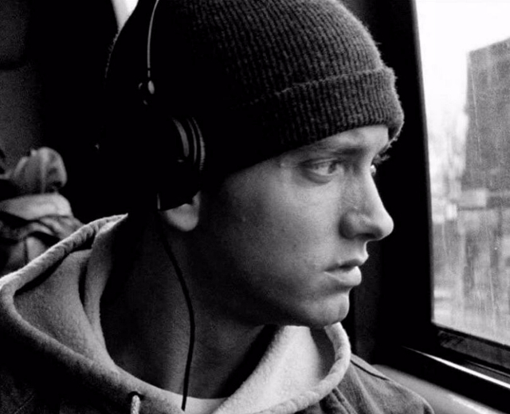
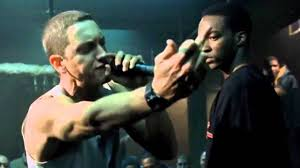

Eminem 为什么那么牛？为什么被称为白人说唱的神？他经历过什么？
他作为白人成功进入了被黑人称霸的说唱领域

首先说唱作为一个黑人中十分流行普及的活动形式，一个白人能进入这个圈子其实自身是要克服一些障碍的，虽然我不想刻意强调种族歧视的
问题但实话实说，在说唱这件事情上白人受到待遇就类似一些高级场合黑人不让你进差不多
他的荣誉足以说明他的实力

来说说他的荣誉吧，由于太多。不一一罗列了，说几个具有典型意义的吧。
- 21世纪专辑总销量最多的美国歌手，不是说唱类歌手，是所有歌手加在一起最多的，具体数字记不清了，大概是7500w左右，（虽然这
些还不如MJ一张专辑卖的多，也没有2pac的总量多，但上述二位主要业绩都不在21世纪，况且本世纪初，由于乔帮主的itunes横空出世
对唱片行业冲击还是比较大的，除了收藏，我现在还真没见过有人买CD听。）
- 第一位流行音乐人获得第75届奥斯卡最佳原创音乐奖 lose yourself。
- 9次格莱美得主，说唱歌手里第一多。
- 04年的时候美国评选他为影响美国社会的现象级人物，一同入选的人还有赫本，MJ、李小龙等，站在这些人的身边我们愈发能感到他的影响力。
两起两落的经历让他与众不同
比赛中的一起一落
- 99年说唱奥林匹克第二名，没有得到签约，却被dr.dre赏识带入aftermath，次年专辑获得格莱美，算是一落一起
染上毒瘾后的大落大起
- 05年至08年的消失众人视线中，因吸毒险些丧命算是第二次低落人生谷底，但顽强戒毒，并以recovery再次获得格莱美算是把自己事业带回正轨
，虽新专辑在水平与风格上已不是当今最优秀的，但其自我改过的主题立意更应得到赞赏。
他崎岖的情感和友情的经历
- 至于他反复的和kim结婚离婚，Eminem不知道自己的父亲是谁；在他还很小的时候，母亲的复杂情感生活，嗑药，让他对母亲有所怨恨。以前生活在底特律，也就是现在的鬼城，没有成名前，生活也是拮据的。其生长环境黑人多，他从小到大最好的朋友Proof，经常和他一起演出，后来在一起酒吧斗殴中被射杀了，他右小臂上有纪念Proof的纹身。前妻Kim是高中同学，后因Kim出轨等原因离婚，他的歌词里有对Kim背叛的恨之入骨，也有对Kim的想念。

点击在线听痞子阿姆的歌曲
您可以在此告诉我们您的意见或建议.